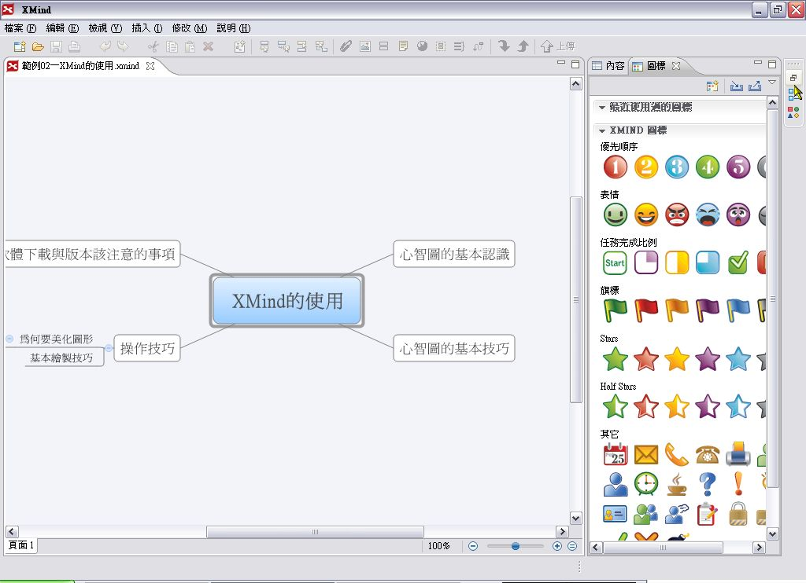

也紀念我們永遠的朋友 李士傑先生（Shih-Chieh Ilya Li）。
開放源碼陣營的思考與企劃新利器 - XMind (2)
＊基本製作技巧篇＊（第二篇）
繪製一張心智圖
雖然心智圖的繪製是很自由的，不過建立出來的內容還是有層級深淺之分的，並不是想到什麼，就全部把它們連結到思考的中心主題去。如果缺乏層次的安排，是很難看出各個想法（主題）之間的關聯性有多高，一個主題之下又有多少要注意的子題或重點。
所以，接下來的心智圖繪製，除了主題的內容編輯之外，另一個重點就是如何增加相同或上下層級的主題。
步驟一：
開啟 XMind 之後，中間會有一個方塊，預設的內容是「中心主題」（以下將以主題來代替方塊），這裡就是用來表示規劃內容的核心主題，其他的內容都應該是和「中心主題」相關的細目。但要怎麼修改內容呢？把滑鼠移到中心主題上，按二下左鍵，就會切換到編輯狀態。
〔補充說明〕
要切換到主題的編輯狀態，一定要先選取想修改內容的主題，然後可用四種方法切換到編輯狀態： 1. 在上面按滑鼠左鍵二下； 2. 按鍵盤上的 F2； 3. 在方塊上按滑鼠右鍵，從出現的快顯功能表點選「編輯」；4. 按功能表的「修改」＼「標題」。這四個方法不但可用於中心主題的內容編輯，主題和子題（XMind 稱為分支主題，Subtopic）也是一樣，大家選擇其中一種來用即可。
步驟二：
在編輯狀態中輸入自己想要的內容，按一下 Enter 後就完成輸入。之後如果要編修文字內容，方法也是一樣。
眼尖的朋友大概會注意到，在右邊有個綠色區域，裡面有左、右向的箭頭，它的用處是改變主題的大小。
步驟三：
完成主題的修改後，接下來我們要加入和中心主題相關的主題。在中心主題被選取的狀態下，按一下工具列的「在後方加入一個主題」鈕。
〔補充說明〕
編輯主題內容時，Attila 比較不喜歡在鍵盤、滑鼠之間不斷的切換，因為這樣子比較容易打斷思緒，而且也沒有效率。通常會改用另一個技巧，就是按鍵盤的 Enter 鍵，一樣可以加入新的主題。
步驟四：
此時就會出現一個主題，並且有線段會連接到原來的中心主題。至於選取狀態，則會變成新加入的主題。
要修改內容，就用前面所說的方法來編輯即可。
步驟五：
按工具列的「在後方加入一個主題」鈕或 Enter 鍵，可以繼續增加同一層級的主題。
若某一主題之後還要加入分支主題，那麼選取該主題之後，按工具列的「插入分支主題」鈕，或鍵盤的 Tab 鍵。
步驟七：
如果我們要在上圖的「基本繪製技巧」這裡加入相同層級的分支主題，有兩個方法可用，一個就是按工具列的「在後方加入一個主題」鈕或 Enter 鍵，另一個就是按工具列的「在前方加入一個主題」鈕。
二者的差別，是前者加入的主題在原來的主題下方；後者則是在上方。這裡我們以後一個方法為例來說明。
〔補充說明〕
在工具列上有關加入主題的按鈕，並非以中心主題為中心，向外延伸的絕對層級概念，而是相對於當時所選擇的主題。例如，分支主題對於某個主題是次一層級，並不見得一定是中心主題的第三個層級，有可能是第二個層級，或第四、第六個層級。
在整張心智圖中，雖然是以中心主題為中心點向外延伸，產生一個個的層級，不過在編輯時，軟體是以所選定的主題為原點，增加的是上或下一層級的主題。
步驟九：
若我們要把「美化圖形的方法」這個主題，變成次一層級，那麼它的前面還要增加一個主題，因此就按工具列的「插入一個上層主題」鈕。
步驟十：
如此就會在「操作技巧」和「美化圖形的方法」之間加入一個主題，這三者之間就形成三個層級。
〔補充說明〕
如果想刪除某一個主題，就把它點選起來後，用下列三個方法的其中之一就可以了。1. 按一下 Delete 鍵；2. 在主題上面按一下滑鼠右鍵，點選快顯功能表的「刪除」；3. 按功能表的「編輯」＼「刪除」。
不同檢視方式的用途
製作心智圖的過程中，對於細節的編輯或在某一主題下延伸更多相關的主題，雖然是一件重要的事，不過對於內容的整體性也是很重要的，不能因此而列出了許多和中心主題沒有關係的東西。因此，繪製到一定的程度之後，最好能夠從整體的角度檢視一下心智圖，以免有見樹不見林之憾。
在上面的範例中，我們已經製作出一個範圍超出檢視頁面的心智圖，如何檢視某一細部或全部內容，在思考與製作的過程也是相當重要，因為這有助於掌握自己的思考是否已經超過或不及。
步驟一：
如果要縮小頁面的檢視，可按編輯區右下方的「縮小」鈕。
步驟二：
編輯中的頁面就會縮小，旁邊也會顯示目前檢視頁面的百分比。反之，如果要放大就按「放大」鈕。如果要回到和原來大小（也就是 100%），就按「自動調整大小」鈕。
步驟三：
前面所說的是縮放編輯頁面，如果希望右邊的面板能夠最小化，好讓編輯頁面能夠有比較大的顯示面積，那麼可以按一下面板上面的「最小化」鈕。
步驟四：
面板就會縮小的像是工具列，並且排在最右邊。我們把另一個面板也讓它最小化。
步驟五：
所有的面板都最小化之後，編輯頁面就有比較大的顯示空間。當然，如果有一台大尺寸的螢幕，搭配可輸出高解析度的顯示卡，面板就不需要最小化也能編輯大一點的心智圖。（註：如果 XMind 能幫大家賺到許多錢，那麼投資大尺寸螢幕和高解析度的顯示卡就值得考慮，如果不是，那麼現在有什麼設備就用什麼吧！畢竟只為了編輯心智圖方便就花大錢，似乎有點浪費！）
若要把面板回復成原來的模樣，並且只想要用其中某一個面板的功能，那麼就在該面板的圖示上按一下滑鼠。
步驟六：
如此該面板就會顯示成原來的樣子。如果要恢復的是整個面板群，那麼就按「還原」鈕。
步驟七：

如此整個面板群就會變成原來的模樣。我們再按另一個面板群的「還原」鈕。
步驟九：
除了最小化，我們也可以關閉面板（如果編輯過程中不想使用面板上的功能，可以考慮這個作法）。按一下面板上面的「關閉」鈕。
步驟十二：
面板關閉之後，當然也要知道怎麼開啟，不然想用相關的功能怎麼辦？開啟面板的方法很簡單，就是按功能表的「檢視」，然後點選想開啟的面板。
步驟十三：
面板就被開啟了。用相同的方法，可以把想用的面板都打開來。
步驟十四：
在檢視整體內容方面，「概要」面板是一個相當有用的工具。我們所建立的心智圖，會在「概要」面板內以大綱架構的方式顯示，這能讓我們能瞭解，如果把心智圖轉換成大綱方式會是什麼樣子，當然也有助於瞭解自己的想法、架構和層級是否周延或合適。
步驟十五：
「概要」面板上所提供的檢視內容總共有二種，一種是檢視整個工作簿的內容，如上圖。如此不但可以檢視單一頁面的內容架構，也可以看到整個工作簿各個頁面及其內容架構。
另一種則是檢視單一頁面的內容，所檢視的是編輯中的頁面。要切換為這個模式，就按一下「概要」面板的「顯示目前頁面」鈕。
步驟十六：
此時所檢視者就是目前編輯的頁面。和上一步驟的圖仔細的比較一下，大家應該會發現這裡沒有顯示工作簿這個層級。
步驟十七：
「概要」面板並不是只有檢視的功能，如果我們想修改某個主題的內容，不必到心智圖內費心找出來，從「概要」面板上，在想修改的項目上按二下滑鼠，該主題就會切換成編輯狀態，直接在這裡修改就可以了。
〔補充說明〕
在「概要」面板上要切換不同的檢視方式，也可以按一下「視圖功能表」，這時會出現一個選單，點選想要檢視的類型即可。這個按鈕並非在每個面板都會出現選單，而是要看面板的內容而定。
※註：下一期將介紹內容整理技巧篇。
※註：上一期文章。
You may be interested in the following articles:
- 開放源碼陣營的思考與企劃新利器 - XMind (4) - 2009-04-05
- 開放源碼陣營的思考與企劃新利器 - XMind (3) - 2009-03-25
- 開放源碼陣營的思考與企劃新利器 - XMind (1) - 2009-02-18
Special


Address：No.128, Sec.2, Academia Rd., Institute of Information Science, Academia Sinica, Nangang District, Taipei City 11529, Taiwan (R.O.C).
Privacy Policy. Terms-of-use